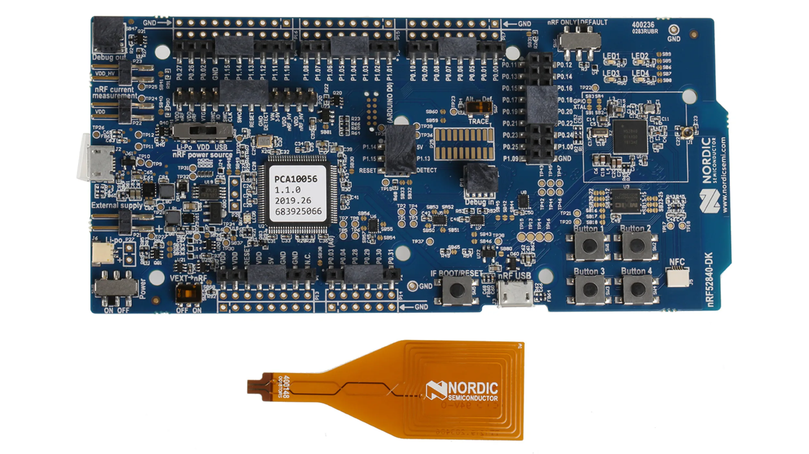
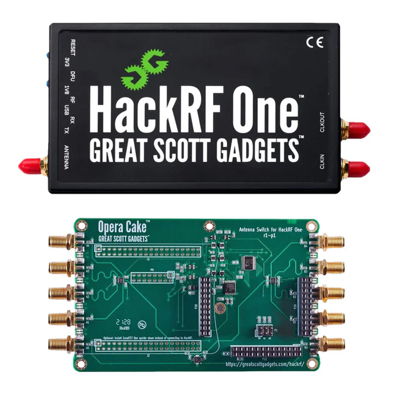

ESE5180 - IoT Wireless, Security, & Scaling
Course Overview
ESE5180 answers the questions engineers have about scaling from a single prototype up to thousands of devices in the field. This class will cover automating build systems with Continuous Integration (CI), investigating various wireless protocols, integrating IoT security, and device fleet management. A final project will show the intersection of technical design with business planning in order to launch a device.
Lectures are MW 1:45-3:14pm
 